2. Sprint (25.4. - 9.5.):
Game Design
Wir haben uns zunächst überlegt, wie unser Spiel funktioniert:
Man befindet sich als Spieler in einer Roboarena. Dabei ist man selbst auch ein Roboter.
Zusätzlich befinden sich noch weitere Roboter in der Arena, welche von uns programmiert werden.
Hierbei haben wir auch noch die Option, es zu einem Multiplayer-Spiel zu erweitern.
Die Roboter schießen sich gegenseitig ab. Wird man getroffen, verliert man ein Leben, wobei man
mit 3 Leben startet. Sind alle 3 Leben weg, hat man verloren. Hat man es geschafft, als letzter in der
Arena übrig zu bleiben, hat man gewonnen.
Die Arena hat verschiedene Felder, mit jeweils besonderen Funktionen:
- Wände: man kann nicht durch gelangen und kann sie nutzen, um sich zu verstecken
- Büsche: hier kann man sich verstecken, d.h. wird von den anderen Robotern nicht gesehen
- Lava: berührt man die Lava, verliert man ein Leben
- Sand: man kann sich hier nur langsamer bewegen
- Eis: man "rutscht aus" (versch. Ideen, wie man das realisiert)
Dann haben wir uns noch überlegt, wie unser Spiel strukturiert sein wird,
d.h. welche Bildschirme es geben wird:
- Startseite/Hauptmenü (Willkommen, kurze Spielanleitung, Button zu Einstellungen)
- Roboter- und Schwierigkeitsauswahl
- Spielbildschirm
- Menü (Button zu Hauptmenü, Hilfeseite, Einstellungen, Spiel schließen, zurück zum Spiel)
- Hilfeseite
- Einstellungen (Helligkeit, Lautstärke, Sprache)
- Game Over / Gewonnen
(Entwicklung Spielidee, Gestaltung Spielfeld & Auswahl der Bildschirme: alle zusammen,
Wireframes/Sketches: Nico)
Wireframe
Ein Wireframe wurde mithilfe von AdobeXD erstellt, der vor allem die funktionalität die wir später in unserem Spiel haben möchten darstellt.
Das Design ist dabei recht simpel gehalten.

Abgesehen von der Startseite soll es dann noch Einstellungen geben, man soll den schwierigkeitsgrad ändern können
und man soll zwischen vier Klassen wählen können.
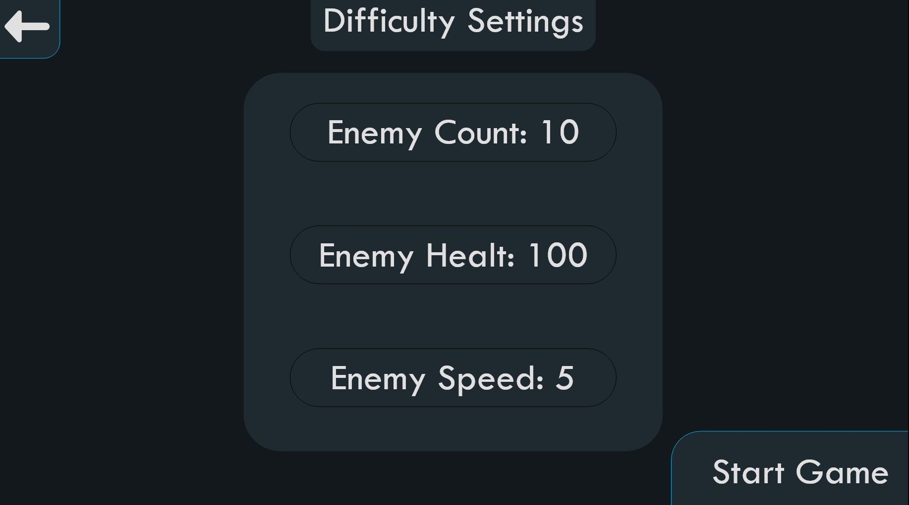
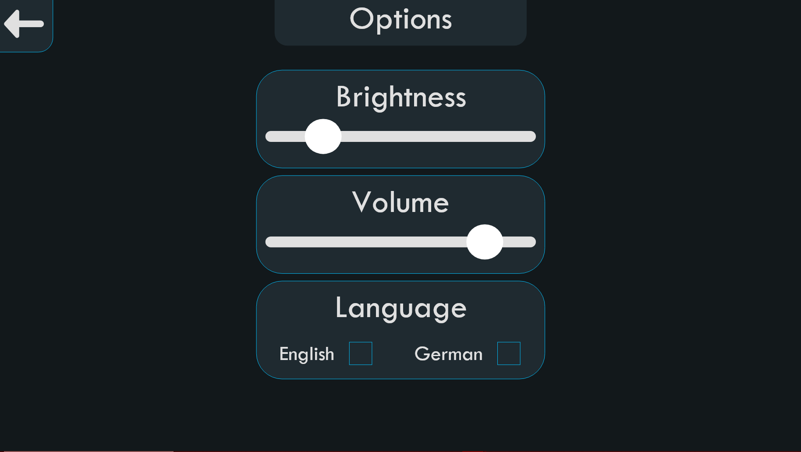
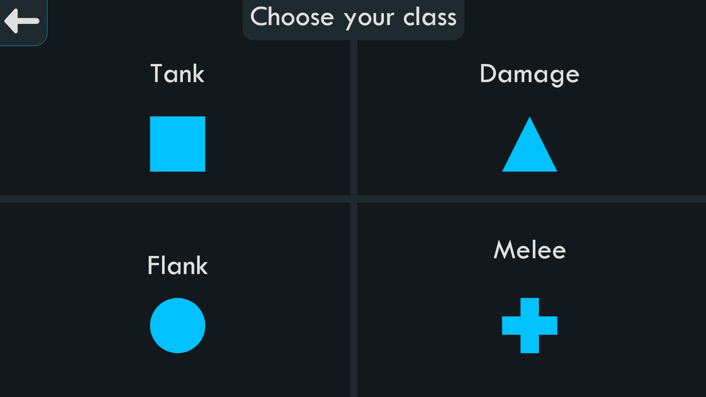
Coding
-
Eine eigene Klasse
Arena wurde erstellt. Diese Klasse verwaltet ein Spielfeld als 2D-Liste mit verschiedenen Geländetypen wie "boden", "rand", "lava", "eis", "sand" und "gebuesch".
Für diesen Zweck hat die Klasse einige Methoden bereitgestellt bekommen:
initialise_map(): Die äußeren Ränder werden automatisch mit "rand" gefüllt, der Rest zunächst mit "boden".create_map(map_data): Aus einer gegebenen 2D-Liste (aktuell 46x23) wird self.grid angepasst.draw_map(): Zeichnet das Spielfeld mit den Einträgen aus self.grid.
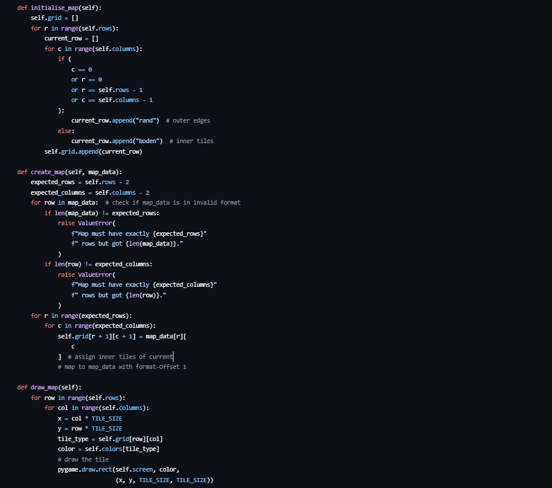
-
Die Darstellung der Arena erfolgt farbbasiert mit Hilfe von
pygame.draw.rect. Alle Farben wurden zentral über ein Dictionary COLORS definiert:
- boden: grau
- rand: dunkelgrau
- lava: rot
- eis: hellblau
- sand: orange
- gebuesch: grün

-
Die Karte selbst wird in
map.py erstellt. Dort wurde eine eigene Karte definiert mit verschiedenen Bereichen wie Lava-Feldern, Eisflächen, Sandzonen und Gebüsch.
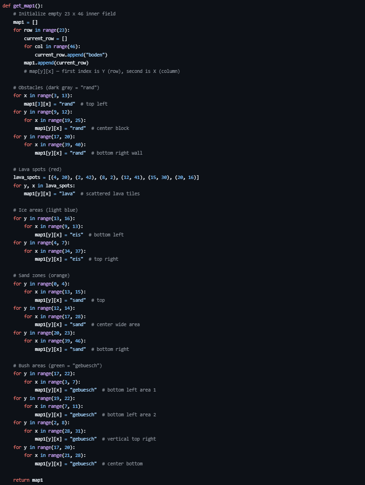
-
Um alles zu testen, wurde eine eigene Datei
main.py erstellt. In dieser Datei wird das Pygame-Fenster geöffnet, die Arena geladen und dargestellt.
So konnte geprüft werden, ob die Karte korrekt angezeigt wird.
Die Fenstergröße wurde auf 1920x1000 Pixel gesetzt (48 Spalten × 40px und 25 Zeilen × 40px).
Es wurde bewusst keine Full-HD-Auflösung (1920×1080) gewählt, da Pygame die Windows-Taskleiste nicht berücksichtigt und das Fenster bei voller Höhe sonst über den oberen Bildschirmrand hinausgeht – inklusive der Fensterleiste.
Diese Werte stehen in einer eigenen Datei config.py.

-
Zeichnung der Map:
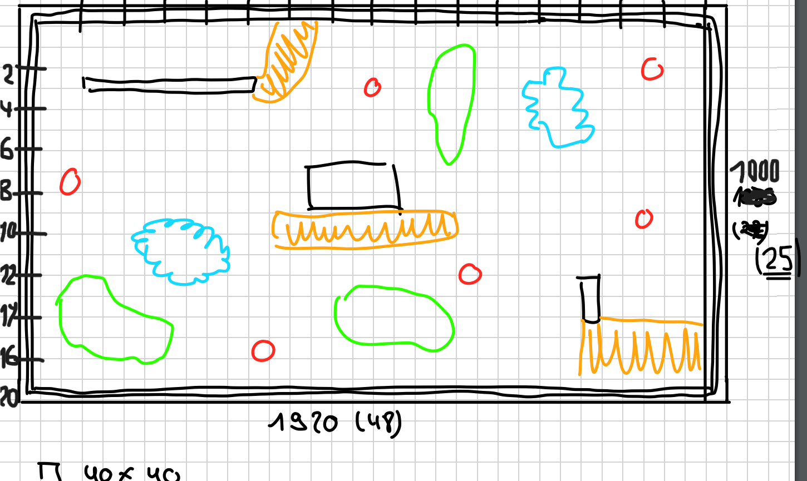
-
Ergebnis (umgesetzt in Pygame):
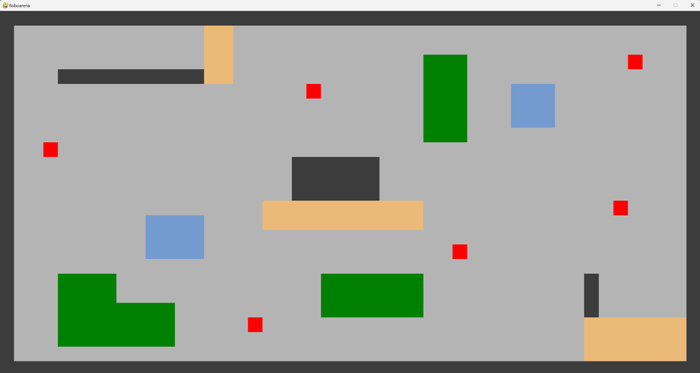
(Coding Arena: Walid)
-
Um Roboter zu erstellen, verändern usw., wurde eine Klasse
Robot erstellt.
Ein Roboter ist zunächst nur ein Kreis mit x/y-Koordinate der Mitte, Radius, Bewegungsrichtung und Farbe.
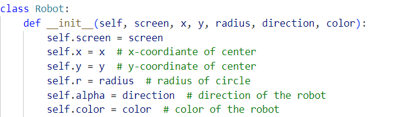
-
Zusätzlich enthält die Klasse noch eine Methode, um den Roboter zu zeichnen.
Um die Bewegungsrichtung des Roboters anzuzeigen, bekommt der Roboter dabei noch Augen, die
in die Bewegungsrichtung schauen. Die Richtung wird in Grad angegeben, wobei 0° nach rechts zeigt.
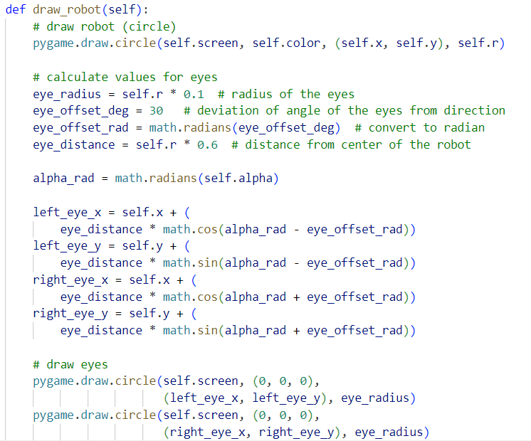
-
Um die Roboter zu testen und zu veranschaulichen, wurden drei verschiedene Beispielroboter erstellt.
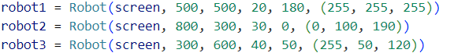
Diese wurden in die Arena eingefügt.
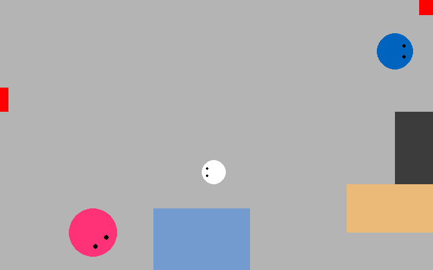
(Coding Roboter: Sarah)
-
Die Bewegung für den Roboter des Spielers wurde in main in der Game loop erstellt.
Zusammen mit den Variablen für die Geschwindigkeit beim Bewegen und drehen werden die gedrückten Tasten
in die Richtungen übersetzt.
Den Roboter kann man nun kontinuierlich in alle Richtungen (incl. diagonal,...) bewegen und unabhängig davon drehen.
Die Pfeiltasten werden für die Bewegung werden benutzt und die Tasten a und d für die Drehung.
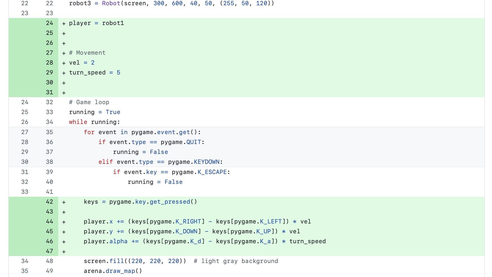
(Coding Bewegungen: Katja)
Sonstiges (Absprachen, Probleme, Fragen etc.)
- Wir haben uns entschieden mit einem Kanban-board zu arbeiten und es erstellt. (Katja)
- Wie immer dokumentieren wir den Sprint auf dieser GitHub.io page
(Seite erstellen: Sarah, Einfügen der Ergebnisse der einzelnen Aufgaben: jeder für seine Aufgabe)
-
Zusätzlich wurde eine Datei
.flake8 erstellt, in der die maximale Zeilenlänge auf 90 Zeichen gesetzt wurde.
Damit gibt es keine Konflikte mit dem automatischen Formatierer Black, der ähnliche Zeilenlängen verwendet.
So werden unnötige Warnungen beim Testen mit Flake8 vermieden.

-
Nachdem wir uns als Team besprochen haben, haben wir entschieden, die Arena doch noch zu verkleinern,
da man sie nur vollständig sieht, wenn man die Skalierung am Bildschirm auf 100% hat. Viele von uns haben
sie jedoch auf über 100%. Die Änderung ist bereits in einem anderen branch erfolgt,
wir haben dazu jedoch noch eine Frage, deshalb ist es noch nicht gemerged.
zurück zur Startseite